Design Documentation
Design Process:
- Initially, I went through all the files provided to me.
- Then I tried various visualization which could be used to display the data.
- Here are some of the rough sketches.
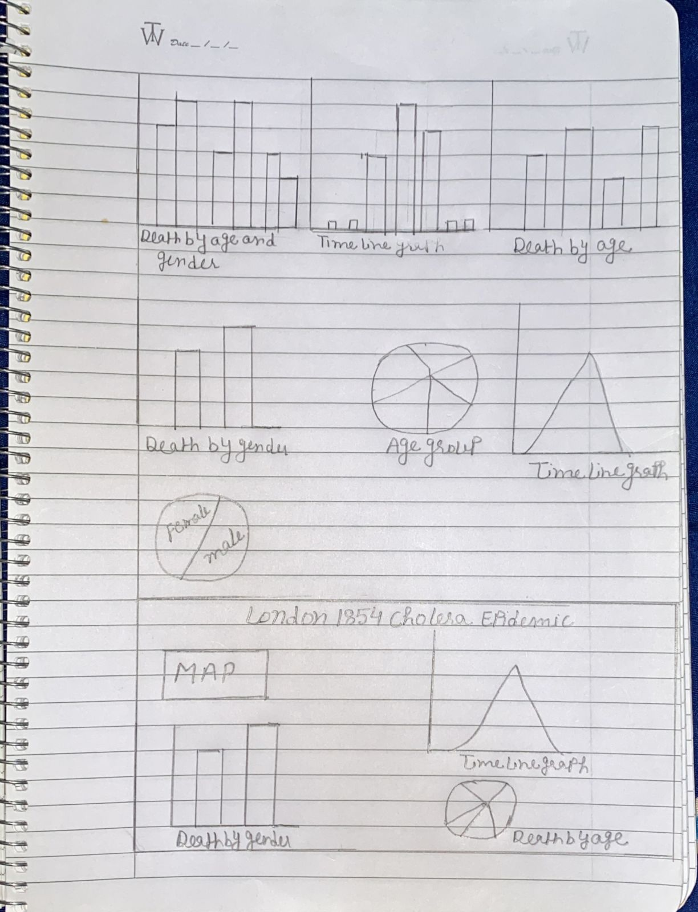
Design Choices:
- I decided to extract more csv files from the given files like, “By_Gender”, “By_Age”, these two csv
files tells about deaths with respect to gender and different age groups respectively.
- I created two different graphs to show the deaths by gender and age.
- Pie chart displayed deaths by different age groups in the data set, while I used bar chart to display
deaths with respect to gender.
- The bar chart is interactive. Whenever you will hover the mouse on the bar graph, it will show the
number of the deaths in males or females and color will be changed.
- Here are some more of my rough sketches:
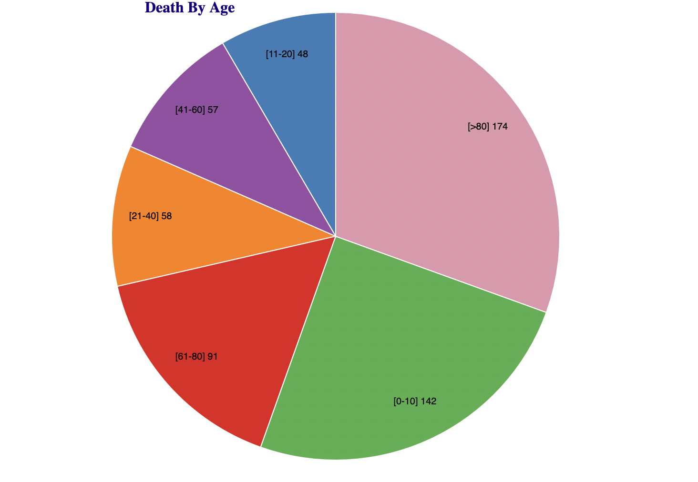
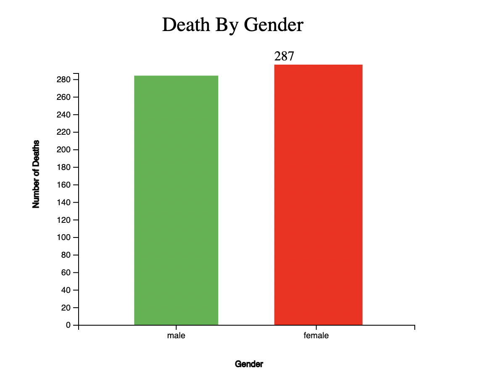
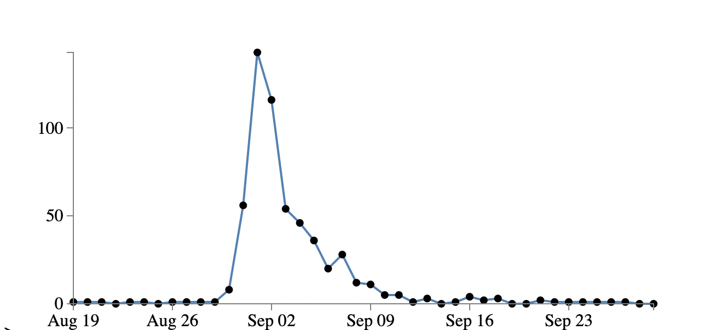
I have also shown some areas like work house, brewery and various streets like oxford,brewer etc.
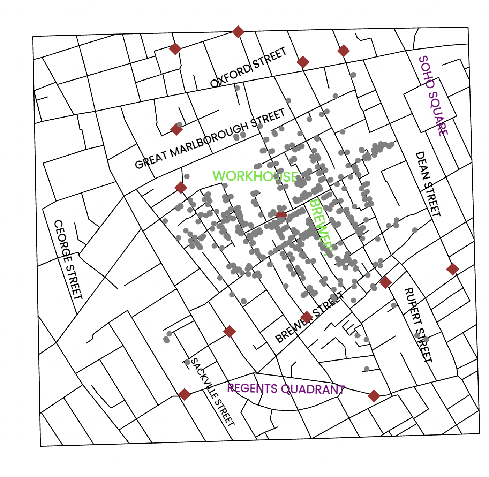
For the timeline graph, I have created a line graph which is linked with the map ,with the three main buttons displayed on the right side of the graph.
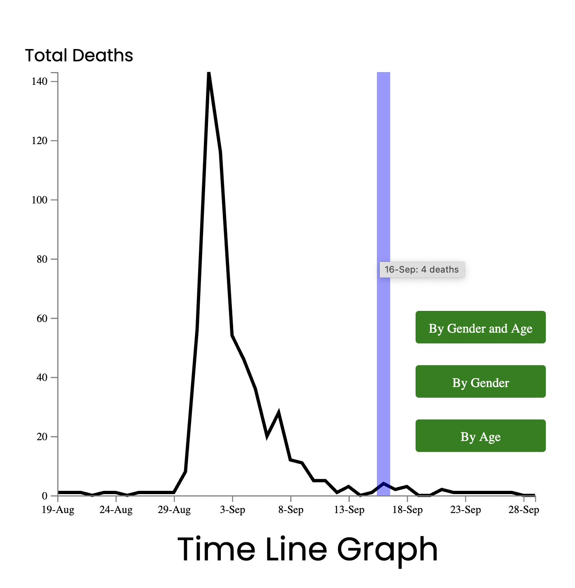
If we click the "By Gender"button, two seperate buttons for males and females will be shown.
I used blue color to represent "Males" and red color for "Females as these colors can be distinguished easily.
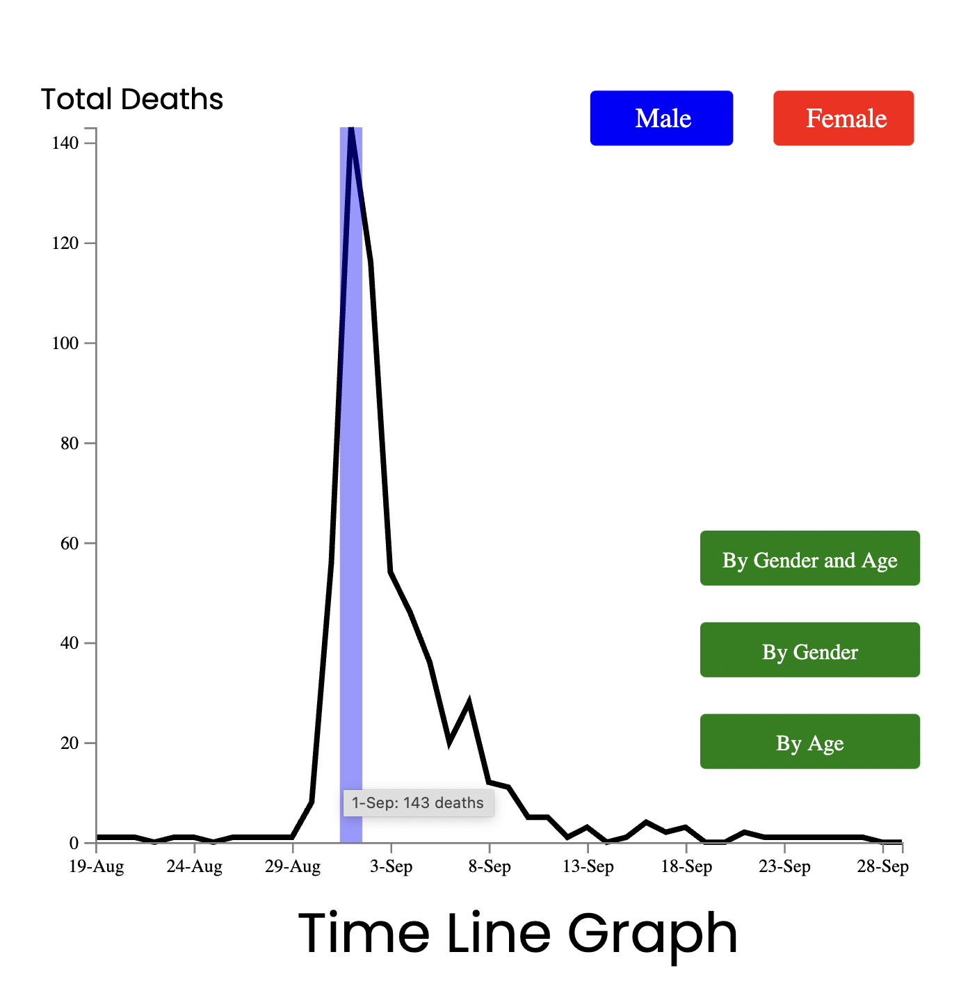
On clicking the "By Age" button , we will get 6 different buttons for the age groups
For age groups, I did not use any color palette of one single color but used the colors which can easily be distinguished.
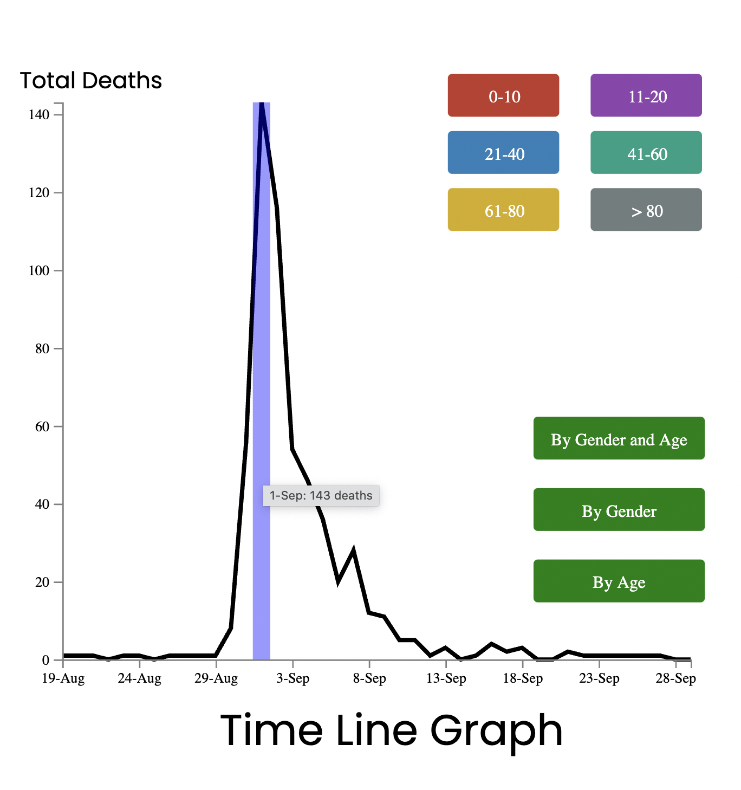
For all the colors used , I referred to various color design tools like “color brewer” , “color oracle” and
"colorgorical"”.
Facts:
- It was clear from the data that people who were in the age group 0-10 over 80 had higher deaths than the
rest of the age groups.
This is because people of these age groups have weak immune system. It is also clear from the visulization below.
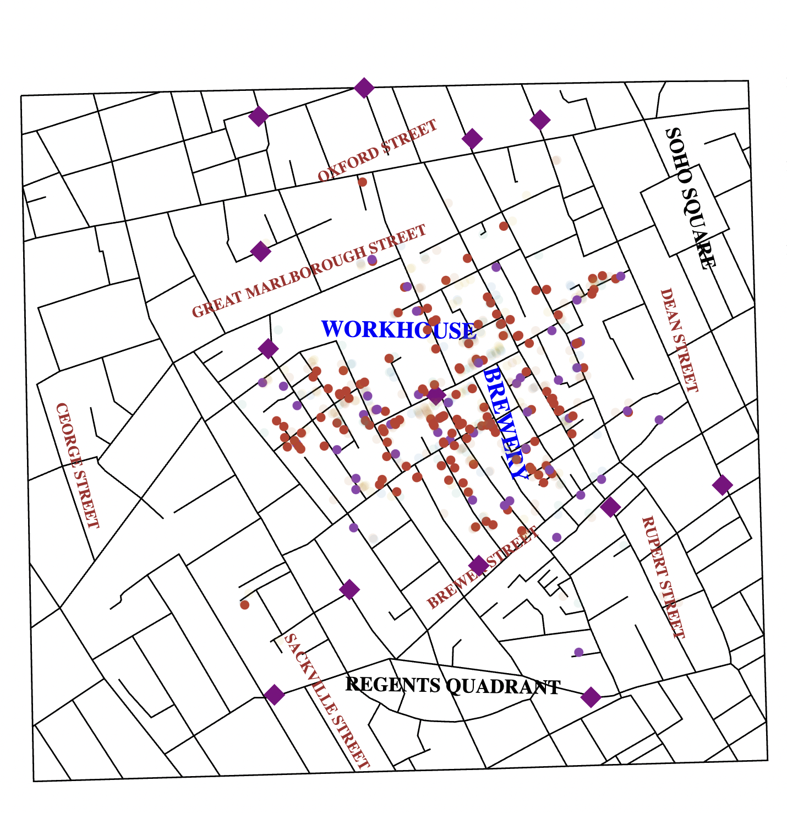
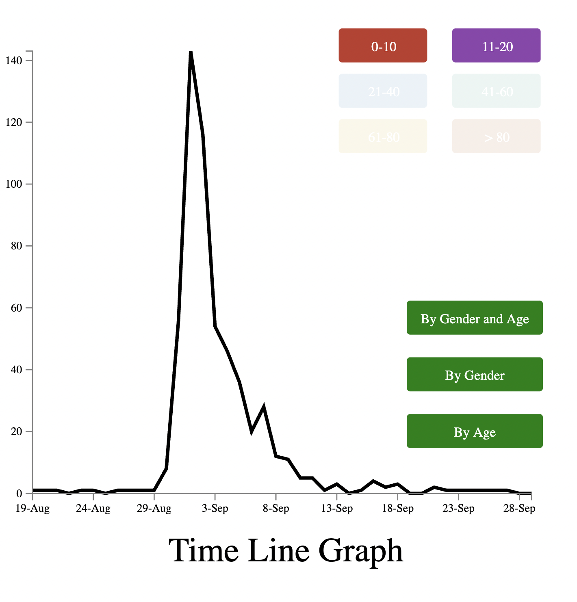
- Also we can see from the map below, that less deaths occurred near the SOHO square, REGENTS Quadrant, CEORGE Street as there were
no or very few pumps near them so i think people used to carry there own water bottle.
- Maximum deaths were seen at the pump which was in between Workhouse and Brewery, but there were very
few deaths around these two places, and again at these locations also, i think people used to
carry there own water bottle.
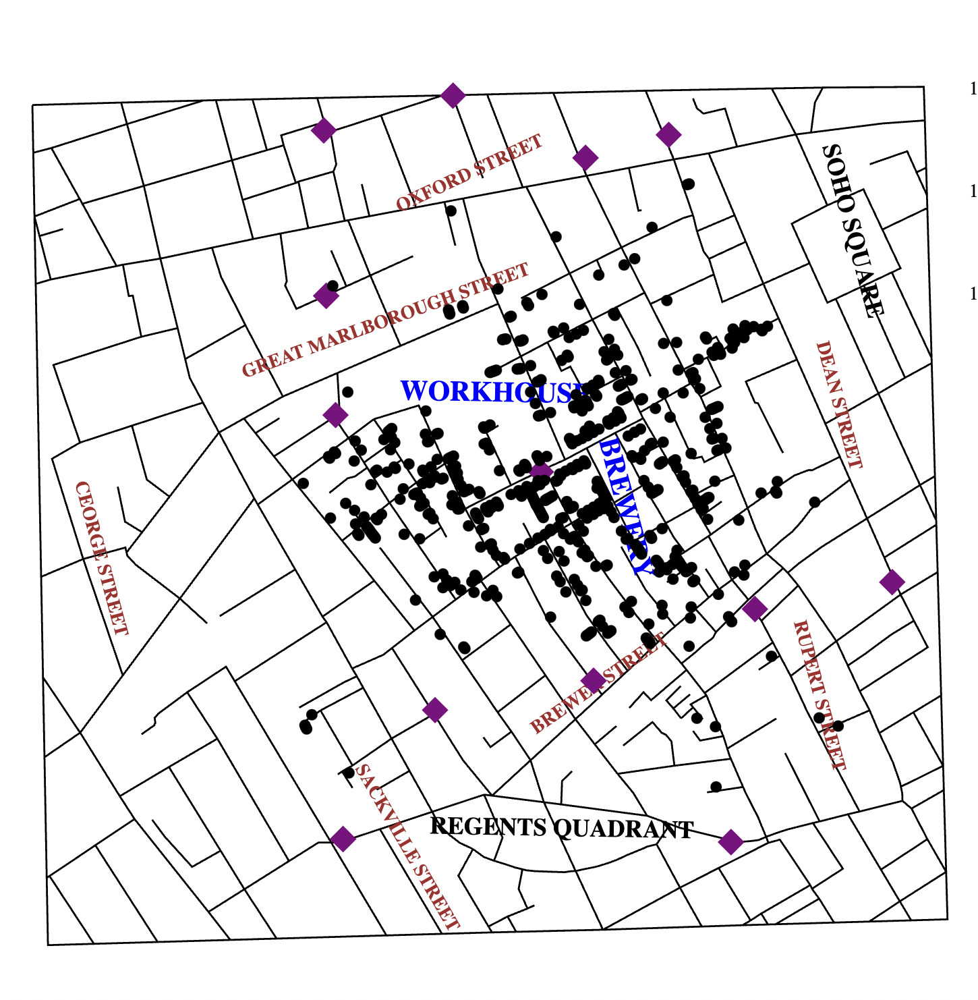
References:
- https://www.tutorialsteacher.com/d3js/create-svg-chart-in-d3js
- https://www.youtube.com/watch?v=_8V5o2UHG0E
- https://www.youtube.com/watch?v=2LhoCfjm8R4
- https://d3js.org/
- https://colorbrewer2.org/#type=sequential&scheme=BuGn&n=3
- https://colororacle.org/
- http://vrl.cs.brown.edu/color